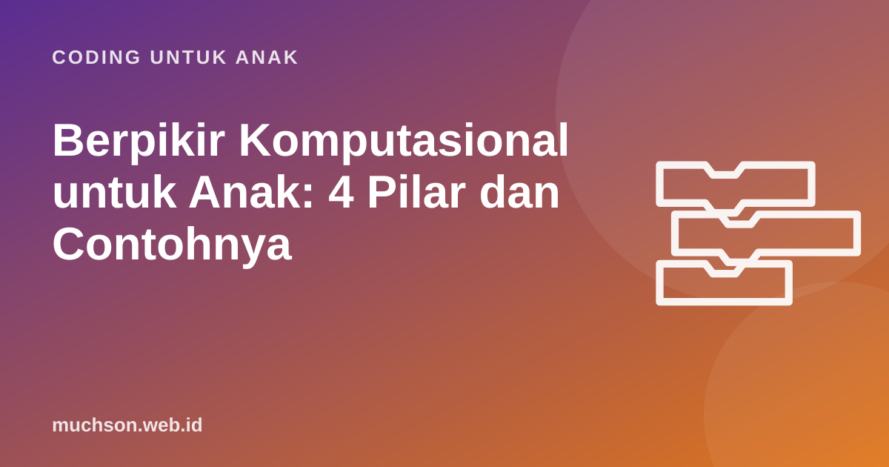

Beranda › Artikel › Coding untuk Anak
Coding untuk AnakBerpikir Komputasional untuk Anak: 4 Pilar dan Contohnya
Istilah berpikir komputasional kini muncul di kurikulum sekolah, brosur kursus, sampai soal lomba. Kedengarannya teknis, padahal anak Anda mungkin sudah melakukannya saat menyusun Lego atau merencanakan rute bersepeda. Artikel ini menjelaskan empat pilarnya dengan contoh dari dapur, kamar, dan game, plus cara melatihnya di rumah.

Definisi singkat yang mudah diingat
Berpikir komputasional (computational thinking) adalah cara memecahkan masalah dengan menyusunnya sedemikian rupa sehingga solusinya bisa dijalankan, baik oleh komputer, robot, maupun manusia. Jeannette Wing mempopulerkan istilah ini pada 2006 dan menegaskan bahwa ini adalah cara berpikir manusia, bukan cara agar manusia berpikir seperti komputer.
Di Indonesia, berpikir komputasional menjadi bagian dari mata pelajaran Informatika, dan sejak tahun ajaran 2025/2026 pemerintah menambahkan mata pelajaran pilihan Koding dan Kecerdasan Artifisial yang dimulai dari kelas 5 SD. Jadi memahami konsep ini membantu Anda mendampingi pelajaran sekolah anak juga.
Pilar 1: Dekomposisi, memecah masalah besar
Dekomposisi adalah memecah masalah besar menjadi bagian kecil yang lebih mudah. "Bereskan kamarmu" terasa berat bagi anak 8 tahun. "Masukkan semua mainan ke kotak, lalu buku ke rak, lalu baju kotor ke keranjang" terasa bisa dikerjakan.
| Masalah besar | Dipecah menjadi |
|---|---|
| Membuat game tangkap bintang | Gerakan pemain, bintang jatuh, cek tangkapan, skor, akhir permainan |
| Menyiapkan bekal sekolah | Pilih menu, siapkan wadah, isi makanan, isi minuman, masukkan ke tas |
| Menulis cerita | Tokoh, latar, masalah, puncak, penyelesaian |
Saat anak berkata "aku tidak bisa", ajak ia bertanya: "Bagian terkecil mana yang bisa kukerjakan dulu?" Ini dekomposisi dalam bentuk paling sederhana.
Pilar 2: Pengenalan pola
Pengenalan pola adalah melihat kesamaan atau keteraturan. Kalau anak sadar bahwa rute ke bendera adalah "maju, maju, belok kanan" yang diulang tiga kali, ia tidak perlu menulis sembilan perintah. Cukup satu pola dan blok ulangi.
Pola ada di mana-mana: motif batik, irama lagu, urutan hari, perkalian 5 yang selalu berakhir 0 atau 5. Anak yang terbiasa mencari pola lebih cepat memahami matematika karena banyak konsep matematika pada dasarnya adalah pola.
Petunjuk: Robo menghadap ke kanan. Satu anak tangga = maju, belok kiri, maju, belok kanan. Polanya diulang. Program terpendek memakai 4 blok perintah plus 1 blok ulangi.
Pilar 3: Abstraksi, fokus pada yang penting
Abstraksi adalah mengabaikan detail yang tidak relevan supaya fokus pada inti masalah. Peta kereta MRT adalah contoh abstraksi yang hebat: jaraknya tidak akurat dan belokannya disederhanakan, tetapi informasi yang penting (urutan stasiun dan tempat transit) sangat jelas.
Dalam game, abstraksi muncul ketika anak sadar bahwa yang penting dari "bintang" hanyalah posisi dan apakah ia menyentuh pemain. Warna, bentuk, dan kilaunya tidak memengaruhi logika. Di level lebih tinggi, abstraksi diwujudkan dengan membuat blok sendiri (prosedur): satu blok "lompat" yang di dalamnya berisi banyak langkah.
Pilar 4: Algoritma, langkah yang jelas dan berurutan
Algoritma adalah urutan langkah yang jelas untuk menyelesaikan tugas. Kata kuncinya jelas: setiap langkah tidak boleh ditafsirkan ganda. Coba minta anak menulis algoritma membuat roti selai, lalu Anda ikuti persis seperti tertulis. Kalau tertulis "oleskan selai ke roti" tanpa "buka tutup toples", Anda bisa berpura-pura bingung. Anak akan tertawa sekaligus paham kenapa komputer butuh perintah yang tepat.
Latihan berpikir komputasional di rumah
Tidak semua latihan harus di depan layar. Pilih satu dari daftar ini per minggu:
- Robot manusia (algoritma): anak memberi perintah langkah demi langkah untuk menuntun Anda ke suatu benda.
- Resep terbalik (dekomposisi): ambil kue kesukaan, minta anak menebak bahan dan langkah membuatnya.
- Pola manik-manik (pola): buat gelang dengan pola warna, minta anak meneruskannya dan menjelaskan aturannya.
- Peta rumah (abstraksi): gambar denah rumah hanya dengan kotak dan garis. Apa saja yang perlu digambar dan apa yang boleh diabaikan?
- Tebak angka (algoritma pencarian): Anda memikirkan angka 1-100, anak menebak dan Anda menjawab "lebih besar" atau "lebih kecil". Strategi terbaik adalah selalu menebak di tengah.
Dari pilar ke proyek nyata
Keempat pilar paling kuat dilatih bersama dalam proyek. Membuat game sederhana memaksa anak memecah masalah, mencari pola gerakan, menyederhanakan, lalu menyusun langkah. Inilah yang membuat proyek coding bernilai: semua pilar dipakai sekaligus, dalam konteks yang anak pedulikan.
Kalau ingin jalur yang sudah tersusun, kurikulum PixelKode membangun keempat pilar ini secara bertahap: modul Perkenalan untuk algoritma dan pola, modul Game untuk dekomposisi dan prosedur, sampai modul Variabel dan Clone untuk abstraksi yang lebih tinggi.
Tanya jawab
Apakah berpikir komputasional sama dengan coding?
Sejak usia berapa berpikir komputasional bisa dilatih?
Apakah berpikir komputasional ada di kurikulum sekolah Indonesia?
Bagaimana tahu anak sudah berkembang?
Sumber dan bacaan lanjut
- Wing, J. M. (2006). Computational Thinking. Communications of the ACM
- Brennan & Resnick (2012). New frameworks for studying and assessing computational thinking
- Antara: Permendikdasmen 13/2025, Koding dan AI masuk Kurikulum 2025/2026
- CS Unplugged: aktivitas ilmu komputer tanpa komputer
- Bebras Indonesia: tantangan berpikir komputasional